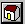

Learning More About an Application¶
In this chapter, we examine the browser in detail.
The browser¶
The Open Dylan browser is a tool for examining the contents and properties of the different kinds of objects we deal with in Open Dylan.
In the browser, the term “object” has a broader sense than is usual in Dylan. Not only can we examine objects in the sense of Dylan class instances, but we can also browse libraries, modules, and even running applications, their threads, and run-time values in those threads.
Similarities between the browser and World Wide Web browsers¶
The way the browser works is similar to a World Wide Web browser. Just as a web browser shows one page of HTML at a time, the browser describes the properties of one object at a time. And just as an HTML page can contain links to other pages, object descriptions in the browser can refer to other browsable objects. To browse them, you simply double-click on their names.
The browser has a history mechanism just like a web browser, allowing
you to move back and forth between objects you have browsed by clicking
on Back ( ) and Forward () toolbar buttons.
) and Forward () toolbar buttons.
Compiler databases and the browser¶
The browser gets some of its information from the compiler database for the project. See Compiler databases and Source, database, and run-time views for details of how compiler databases are derived, and how they fit in to the overall view of a project that Open Dylan presents.
Browsing a project in source and run-time contexts¶
The browser allows you to look at projects in both source and run-time contexts. That is, the browser can show you information gathered from the source code representation of a project and also information gathered from a running instantiation of the application or DLL that you have built from that project.
You can look at the static relationships between source code definitions (for example, the superclass and subclass relationships between the classes a project defines) as well as the dynamic properties of run-time values (for example, the value of a local variable in a stack frame).
In the first case, you are looking at information taken from the project’s compiler database, and in the second, you are looking at information taken from the application as it runs.
The browser matches run-time objects up with their source code definitions to make as much information as possible available when browsing. For instance, if you select a local variable on the stack in the debugger, and choose the shortcut (right-click) menu’s Browse Type command, the browser is able to locate the source code definition of the variable’s class.
Browsing Reversi¶
In this section, we use the Open Dylan browser to explore Reversi.
If it is not already open, open the Reversi project.
Go to the Reversi project’s Definitions page.
Note that the project window’s Definitions page will only contain information if that project has already been built. That is because, like the browser, the project window gets this list of definitions from the project’s compiler database.
The Definitions page will be the starting point for our browsing work. We are going to browse definitions in Reversi, and examine the relationships between them.
Expand “library reversi”, and then “module reversi”.
Double-click on <reversi-square> in the list of definitions.
To find this definition easily, you can use the Definitions page’s popup list to show only Classes.
The browser appears.

The Open Dylan browser.¶
The browser arranges information about objects in a set of property pages, with the set of pages available varying according to the type of object being browsed. Though we do not describe all the possible pages here, nearly all have clear meanings. See List of property pages for a summary of the pages available in the browser. (Some of these pages also appear in the project window.)
We now take a look at some of the pages available for <reversi-square>
.
The Source page¶
The browser provides a Source page for any object that has a definition
in source code. For <reversi-square>, we can see the source code
definition in board.dylan that created it.
The Source page shows the definition in a read-only source code pane. If
we wanted to edit the definition, we could click the Edit Source
( ) button above the source code pane. That would open an editor
window on board.dylan, with the insertion point positioned at the
start of the definition of
) button above the source code pane. That would open an editor
window on board.dylan, with the insertion point positioned at the
start of the definition of <reversi-square>.
For objects that have a representation in the project sources, the Source page will always be the first page that you see when the browser displays the object for the first time.
We now move on to look at some of the other pages of information about
<reversi-square>.
The General page¶
The browser provides a General page for every object it can browse. The General page gives an overview of the object being browsed: its name, the type of object it is, the source file containing its definition (if any), and so on.
Select the <reversi-square> definition’s General page.
The General page for <reversi-square> shows that it is a class from
the source file board.dylan, that it is defined in the reversi
module of the reversi library, and that it has two slots.
General details about the <reversi-square> class definition.¶
Navigation in the browser¶
This section explains how to navigate through objects in the browser, and explains the browser history mechanism.
Moving from one object to another¶
The object information displayed in browser pages often has its own properties and contents that we might also want to browse. With a simple double-click on the information we are interested in, we can move on to browsing other objects.
Go to <reversi-square> ‘s Superclasses page.
The Superclasses page shows a class’s superclasses in a tree view. In
this case, we see a single expandable item, the class <simple-pane>,
meaning that <simple-pane> is <reversi-square> ‘s only superclass.
If we want to browse the definition of <simple-pane>, all we need to
do is double-click on it.
Double-click on <simple-pane>.
The browser switches to browsing the definition of the class
<simple-pane>. The default view is again the Source page.
Select the Superclasses page again.
The Superclasses page now shows the four superclasses of <simple-pane>.
Notice that the superclass names are not directly visible in the
current module (reversi, as selected in the toolbar pop-up) and so
are qualified. For example, <standard-input-mixin> appears as:
<standard-input-mixin>:duim-sheets-internals:duim-sheets
We see more about this in Namespace issues in the browser.
We could continue traversing the class hierarchy by double-clicking on a superclass name to browse that class definition in its own right, or, by clicking on the + signs, we could expand the names to reveal their superclasses.
Using the history feature¶
As soon as the browser has displayed more than one object, its history
feature is enabled. You can access the browser history by choosing an
object from the Object combo box, or from the Go menu. In addition,
the Back () and Forward () buttons allow you to
navigate the browser history.
Choose Go > Back or click on the Back button.
The browser returns to browsing the <reversi-square> definition.
Notice that the browser remembers which property page you were browsing.
Browsing a project’s library¶
To browse the current project’s library definition, choose Go > Library or the Browse Library () button.
Click the Browse Library button.
The browser switches to the Reversi project’s library definition. We see the usual General and Source page, as well as Warnings, Usage, Definitions, and Names.
The Warnings and Definitions pages are the same as those that we see in project windows. The Names page provides views of all the Dylan names in the library, with a variety of possible constraints.
The Usage page gives a tree view of the library usage relationships for the current library. The first level of expansion shows the names of the libraries that Reversi uses. Expanding those library names shows the libraries they use, and so on.
Namespace issues in the browser¶
Move through the browser history to find the <simple-pane> object
again.
Go to its Superclasses page.
We saw this page in Moving from one object to another. There, we said that the special naming format used for the superclasses here meant that they were not part of the current module of the current library.
To the browser, the current module is whatever module name is selected in the drop-down list box above the Object field (currently reversi ) and the current library is the library defined by the project.
Change the selected value in the drop-down list to dylan:dylan.
The name <simple-pane> in the Object list changes to
<simple-pane>:duim-layouts:duim-layouts.
This new representation of the <simple-pane> name says that
<simple-pane> is found in the duim-layouts module of the
duim-layouts library. This browser uses this special name :module
:library naming format whenever name is not exported by the current
module of the current library.
By changing the list setting to dylan:dylan, we told the browser that any name not in the dylan module of the dylan library should be printed using the special suffix.
The browser’s ability to display names from other modules than the current module in an unambiguous fashion is important, because while browsing you may come across names not defined in your library. The browser needs to be able to make it clear when a name is not from the current library and module.
Browsing run-time values of variables and constants¶
You can browse the values of variables and constants in running applications. The browser shows the run-time value of a variable or constant in its Values page. Simply browse the definition of the variable or constant by double-clicking on it in the project’s Definitions page.
The values are shown in a table. Thread variables (variables local to a particular application thread) are shown with an entry for each thread containing a variable of that name. Constants and global variables only ever have one value across all threads, so this is shown as a single table entry entitled “All threads”. You can update the value shown in the browser with View > Refresh.
We will browse Reversi’s *reversi-piece-shape* variable to show how we can monitor the value of a variable while an application is running. That variable stores the current shape of the pieces being used on the Reversi board. By default, Reversi uses circular pieces.
Start the Reversi application.
In the Reversi project window’s Definitions page, double-click on the variable *reversi-piece-shape*.
In the browser, choose the Values page.
Browsing values in a running application thread.¶
The value of *reversi-piece-shape* is shown as #”circle” for all threads. This is what we expected. Reversi has only a single thread, and we expected some value that would represent a circle.
Choose Options > Squares in the running Reversi application.
Choose View > Refresh in the browser.
Updated variable value after changing state of application.¶
The value is now #”square”. This reflects the internal change to the variable that our menu selection caused.
Browsing local variables and parameters on the stack¶
You can browse the contents of the local variables and function parameter values in call frames, as seen in the debugger. These are values on the stack in a paused application thread. Simply double-click on one in the debugger stack pane, and the browser will display its contents. See Browsing local variables for an example of browsing local variable and parameter values.
Browsing paused application threads¶
Browsing functionality for paused application threads is done in the debugger, not the browser. Think of the debugger as a specialized browser for paused application threads.
However, you can browse a list of current application threads in the browser, along with a text message describing their state, by choosing Go > Threads in the project window, editor, or debugger.
If you double-click on a thread name in that list, Open Dylan opens a debugger window on the thread, or, if it already exists, raises the debugger window for the thread, thus pausing the application. Once in the debugger, you can browse the local variables and parameters in call frames in the usual way. See Browsing run-time values of variables and constants.
Keeping browser displays up to date¶
Because the browser shows values either gathered at a point in program execution or during compilation, there are opportunities for the information displayed on a browser page to get out of date:
If you are browsing a definition and you have edited its source, you must recompile it to ensure that the compiler database is up to date.
Even when you have recompiled a definition, you must make sure that the browser display is refreshed with View > Refresh.
If you are browsing a run-time object, that object might have since changed. Refresh the browser display with View > Refresh to make sure you are seeing the most up-to-date value.
List of property pages¶
The following is a list of property pages supported in the browser. Some of these pages can also be seen in the project window.
Breakpoints The breakpoints specified for a project.
Contents The slot names and values of a run-time instance.
Definitions The names of the Dylan language definitions created by a module, library or project.
DLLs The DLLs currently loaded while debugging. You can sort them by version or by file location.
Elements The keys and elements of a collection instance.
General The properties of the object (name, type, location).
Hierarchy The hierarchy of a DUIM sheet, layout or frame.
Keywords The initialization keywords for a class.
Libraries The list of libraries in the project.
Memory The object’s memory in the application, shown in bytes.
Methods The methods of a generic function, or the methods specializing on a class. You can show either methods defined directly on the class or all methods applicable to the class.
Names The names defined in a module or library. Includes details of from where a name was imported, and whether a name is exported. You can filter to show local names only (that is, names created by the module or library rather than imported from elsewhere), exported names only (which can be both local and imported), or all names (local and imported).
Slots The slots of a class.
Source The source code for a source form, with breakpoints shown.
Sources The source files contained in a project, and their contents.
Subclasses The subclass hierarchy of a class.
Superclasses The superclass hierarchy of a class.
Threads The threads in an application, with priorities, status, and other properties.
Usage The used and client definitions for a source form.
Values The run-time values of constants and variables.
Warnings The compiler warnings associated with a source form.